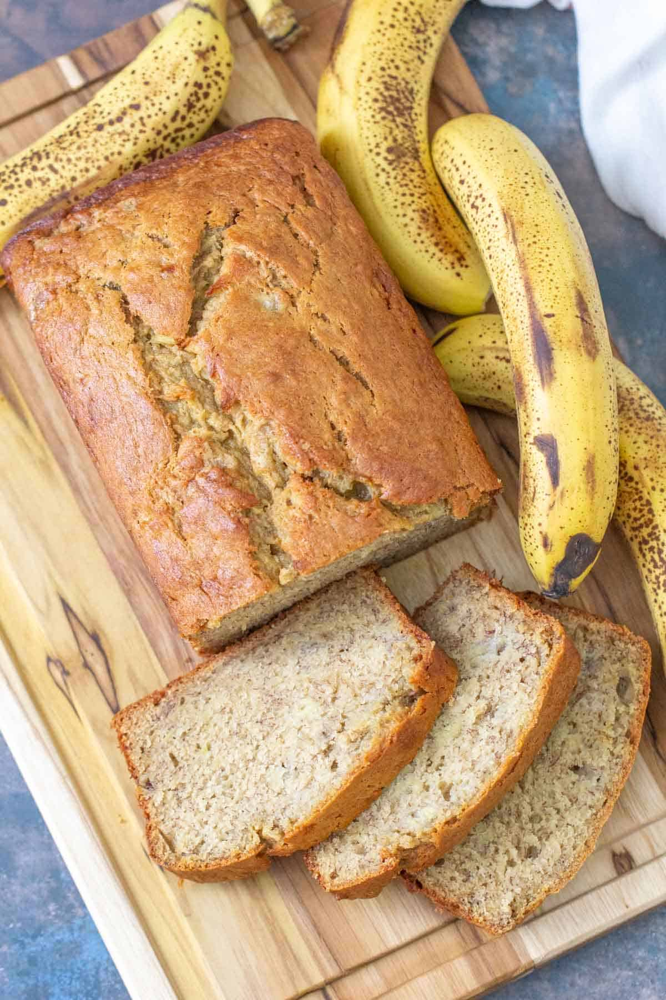

Jiffy Mix Banana Bread

A super easy and delicious way to eat bananas in bread form
This recipe is made easy with "Jiffy" All Purpose Baking Mix. "Jiffy" adds
the perfect color and texture to this bread that can be eaten any time of
the day.
Ingredients
Makes 1 loaf
- 2 cups "Jiffy" Baking Mix
- 3/4 cup sugar
- 1/4 cup shortening
- 2 eggs
- 1 cup ripe banana, mashed
Directions
- Preheat oven to 350 degrees Fahrenheit. Grease a 9" x 5"
loaf pan.
- Cream sugar and shortening. Add remaining Ingredients. Mix until
blended.
- Pour into pan. Bake 50-55 minutes.Cool slightly
before removing from pan
- Enjoy!